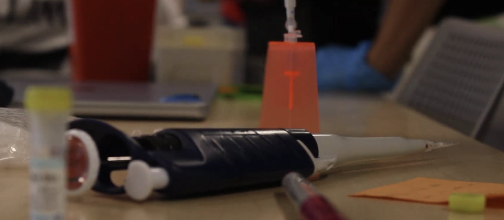
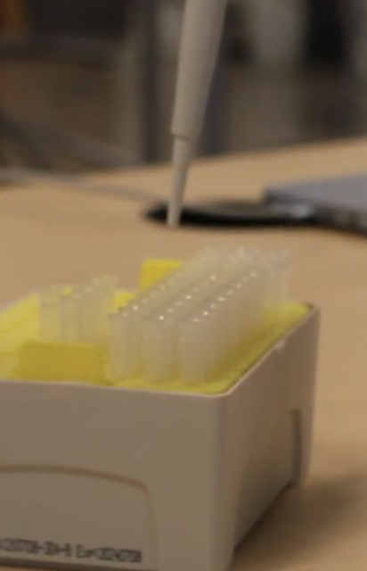
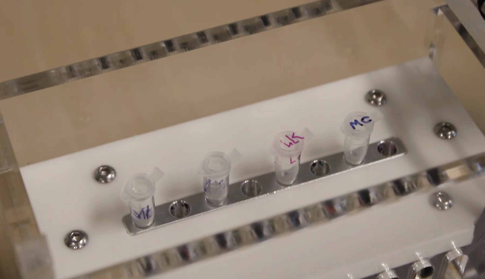

9th Grade - Biotech Breakthroughs: Genetics Experiment: Who's Your Match?
Process & Steps
- Research
- DNA Testing
- Videography
- Video Editing
Introduction & Background
The discovery of DNA's structure was monumental in the world of biology. Its discovery solved countless mysteries regarding protein synthesis and heredity. However, there are still mysteries of DNA that exist today. Over 99% of all human DNA is the same between individuals, yet there are still obvious biological differences between people. In this project we looked into genetic testing to see how DNA and these biological differences interact with race.
Backgroung Research
Prior to working with genetic testing, we researched two main innovations in biotechnology: the invention of handwashing and the discovery of DNA's structure. I believe that this research was important to this project because of how it stresses the fact that tiny molecules (technically DNA is a very large molecule, but it's still small relative to people) and tiny bacteria heavily influence the lives and wellbeings of all living organisms.
We also researched the steps of the genetic testing process that we would undergo for this experiment. First, DNA extraction, where cells are broken open and DNA is unraveled from the proteins of chromatids and isolated from the cellular debris for extraction. Secondly, Polymerase Chain Reaction (PCR), where specific strands of DNA are exponentially isolated and multiplied to have a usable amount for genetic testing. Finally, gelelectrophoresis, where a voltage is run through a gel holding DNA samples that are then drawn through the gel to measure their lengths and the number of nucleotide base pairs in a sample.
CLICK FOR DOCUMENTARY
Genetic Testing
DNA Extraction
- Swab cheeks to get a tooth pick with cheek cells on it.
- Place the samples into a test tube with DNA extraction.
- Heat these samples.


Polymerase Chain Reaction (PCR)
- Combine PCR reagents with DNA primers.
- Add the heated DNA to the reagent mix.
- Mix the DNA and reagents together.
- Heat again in a PCR machine.

Gelelectrophoresis
- Assemble the gel mold.
- Combine a buffer with agarose.
- Heat the agarose solution.
- Pour the heated solution into the gel mold.
- Allow the gel to set.
- Place dyed DNA samples into the divets of the gel
- Run a voltage through the gel.
Data Analysis
DNA has a negative charge, so in gelelectrophoresis it is attracted towards the positively charged end of the gel. The smaller the DNA strand, the further it will travel through the gel. By comparing how far DNA samples traveled with known lengths of DNA, we can determine how long a DNA strand is and how many times a specific sequence is repeated. For this experiment we've been looking at a VNTR, a piece of non-coding DNA that repeats in all people a different number of times, the most common number of repititions being 18 and 24. Prior to experimenting, we recorded our predicted matches (who in our class we believed we would have the same number of repititions as). Almost the entirety of the class, including myself, made these predictions based on race; our results were very surprising. I personally (Biracial, Korean and white) matched with 8 individuals. 2 people self-identifying as middle eastern/north african, 3 people self-identifying as african/black, 1 person self-identifying as hispanic/latino, 1 person self-identifying as east asian, and 1 person self-identifying as biracial (Southeast asian and latino). As a class on average, we matched with 0.56 individuals of the same ethnicity/race and 4.48 individuals of a different race/ethnicity.
Claim
Is Race Biologically Real?
In our experiment, our DNA was tested to see how many times each individual’s DNA repeated a specific common sequence. Once sampled, the DNA was compared to each other to determine who ‘matched’ and had similar DNA to each other. In my case, I am Asian and white and expected to match with other people who were either or both. In actuality, my DNA was matched with 2 people of middle eastern/northern African descent, 3 people of black/african american descent, 1 person of latino/hispanic descent, 1 person of asian descent, and 1 of asian and latino/hispanic descent. 2/8 of my matches were from similar racial/ethnic groups, 6/8 were from unrelated racial/ethnic groups. While there were only 4/53 other people of asian ethnicity, matching with 50% of all the other asians is a relatively high correlation; however, there is also the fact that 75% of all of my matches were from people of different ethnicities and 0% were from white people. Additionally, maps of skin color internationally could suggest similar correlation as well because people of similar geographical race/ethnicity have similar skin tones to each other; however, skin tone maps correlate extremely highly to UV maps. People of any skin tone become tanned with exposure to UV light. Locations that receive the most UV light correlates with locations where indigenous people have the darkest skin tones.
Biological race refers to the concept that humans from similar geographical locations have defining characteristics that make them significantly different from characteristics of humans from different geographical locations. For example, humans with heritage from one part of the world may have different skin color or nose shapes from humans with heritage from a different part of the world. These differences are reflected in humans’ DNA; the two aforementioned examples humans would have different DNA coding for their skin color from each other and similar DNA for skin color to other individuals from the same geographical locations.
I believe that biological race is not real because the same traits that define a race can be found in other environments as well. For example the Asian and Inuit eye shapes are very similar and from completely different geographic locations. Additionally, people from central Africa have similar skin tones to aboriginal Australians despite their distance geographically. Provided the previous evidence regarding my personal results of genetic testing and the fact that many people I spoke with had similar, surprising results, had the concept biological race been real, I would’ve expected to have only matches with people of Asian and European descent. Because I did match with 50% of the Asian population my DNA was tested against, I do assume there is some stronger correlation between my DNA and theirs. However, I also matched with people of other ethnicities/races simply because all humans are so similar to one another genetically.
Is Race Socially & Psychologically Real?
The Harvard implicit association test (IAT) measures implicit social and psychological biases based on race. The IAT’s results display that a large percentage of Americans are positively biased towards white people and negatively biased towards black people at a glance. An experiment was done in a 3rd grade predominantly white class room in the 1960s where the class was divided by eye color to model race. The first day, the blue-eyed group was favored over the brown-eyed group and the brown-eyed group performed weaker on cognitive tests as well as getting into fights and arguments with the blue-eyed group. The next day, the brown-eyed group was favored over the blue-eyed group. This day the blue-eyed group performed weaker on cognitive tests and the brown-eyed group performed much higher than they had the day before.
Social and psychological race is the concept of how people who are visually perceived as one race are treated differently from people of a different race whether in a positive, negative, or neutral manner. Societal race and racism are caused by society as a whole and systematically ingrained in how we view people.
In the example of the IAT, because of how implicit biases are ingrained in our brains by society, without realising it, we have measurable racial biases. The experiment with the classroom in the 1960s displays the same thing. Changes to the children’s environment or ‘society’ caused a change in their implicit biases. Both however are highly arbitrary; people with ancestry in any area of the world can be perceived as a different race because of society. The same applies for people of multiracial descent such as myself. We’re often perceived as one race rather than both, often I am perceived only as east Asian and am almost never perceived as only white. In people of one race raised in another geographical location, they can socially identify with the place they were raised while still being perceived as from somewhere entirely else.